やるべきこと-editor の使い方
画面写真つきの手引きです。最初は「1 画面の見かた」と「2 書く」だけ読めば使えます。
残りは、必要になったときに戻ってきてください。
1画面の見かた
まずはどこに何があるかだけ掴んでください。

- 1ツールバー — 書くための道具が並んでいます。左から「足すもの」、右へ行くほど「全体に関わるもの」です。
- 2ナビゲーション — 書いた見出しが自動で並びます。押すとその場所へ飛びます。
- 3本文 — クリックすればそのまま書けます。保存ボタンはありません（自動で保存されます）。
- 4付箋 — 画面の右端に貼りつくメモ。押すとその場所へ飛びます。
- 5本日更新 — その日に書き足した所だけが、自動でここに集まります。
2書く — 見出し・段落・セクション
ツールバーの左側が「足すもの」です。
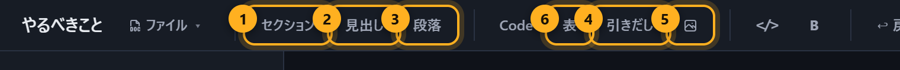
- 1セクション — 大きな入れ物。畳めます。ひとつの話題をまるごと入れます。
- 2見出し — ただの見出し。畳めません。ナビゲーションに出ます。
- 3段落 — ふつうの文章。
- 4引きだし — 小さな入れ物。セクションの中で、さらに畳みたいときに。
- 5画像／6表 — そのまま貼れます。
セクションと見出しの違い
| セクション | 見出し | |
|---|---|---|
| 畳めるか | 畳める（中身ごと隠れる） | 畳めない |
| 中に入るか | 入る（他のブロックを抱える） | 入らない（ただの行） |
| 向いている使い方 | 案件・プロジェクトの単位 | 長い文章の区切り |
迷ったらセクションにしてください。あとで畳めるほうが、増えたときに困りません。
字下げ
Tab で一段下げ、Shift+Tab で戻せます。 行の先頭で Backspace を押しても一段戻ります。
3畳む — セクションと引きだし
増えてきたら、読まないものを隠します。消さずに隠すのが要点です。
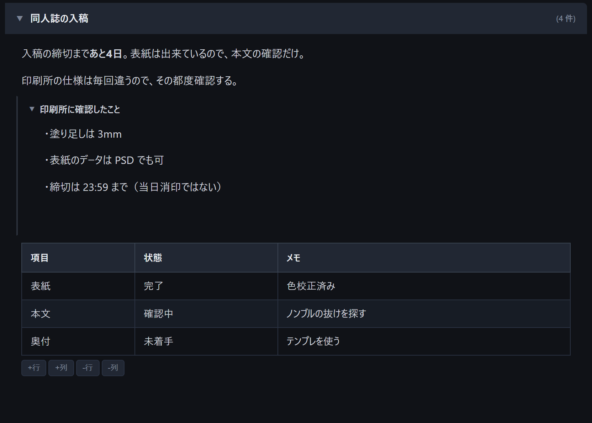
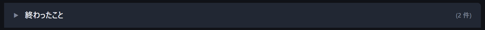
引きだし
セクションの中で、さらに小さく畳みたいときに使います。 「調べたときのメモ」「印刷所に聞いたこと」のような、 いま要らないが捨てたくないものの置き場です。
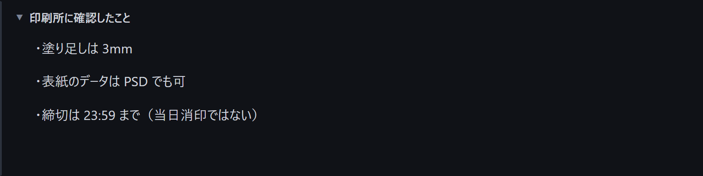
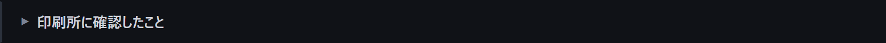
4表・コード・画像
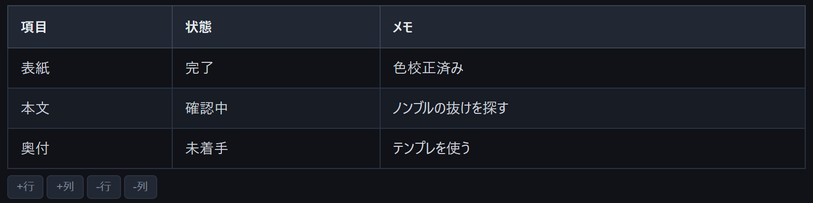
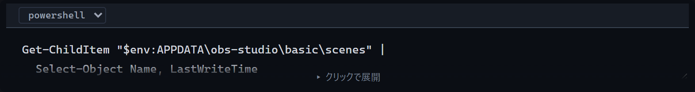
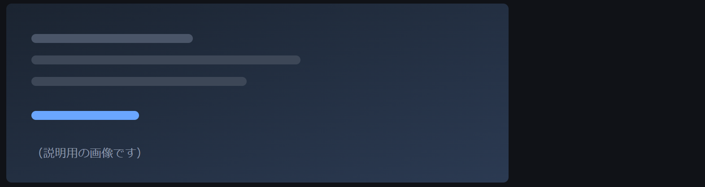
5付箋 — 戻ってくる場所に貼る

- 1付箋を足すボタン。付箋が並ぶ場所のすぐ上にあります。
- 2貼った付箋。押すと、その付箋を貼った場所まで画面が飛びます。
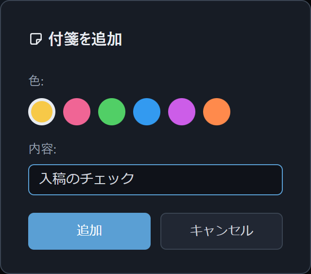
画面の幅が狭いときは、付箋は右端に隠れます。マウスを近づけると出てきます。
6整理モード — 動かすだけの日に使う

- 1ツールバーの「整理」を押すと入ります。もう一度押すと出ます。
- 2入っている間は、画面の上にこの帯が出ます。
この間の移動・削除は「本日更新」に出ません。
週に一度の片付けは、必ず整理モードに入ってから。これだけで記録が汚れません。
7本日更新 — 今日どこを触ったか
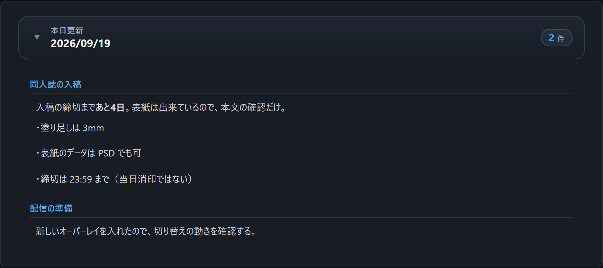
手で書くものではありません。書いていれば勝手に溜まります。 画面の下と、左のナビゲーションの両方に出ます。
やり直したいときは「履歴」の中にある「本日更新をリセット」で、 いまの状態を新しい基準にできます。
8履歴と、週のまとめを出す
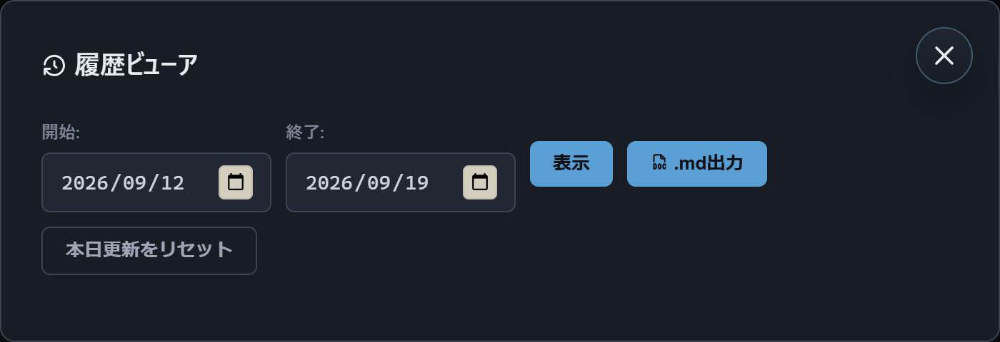
週のまとめを1ファイルで出す
ファイルメニューの「履歴を HTML で書き出す…」を使います。

- 1期間はワンタッチで選べます。「今週」「先週」「直近7日」「直近30日」「全期間」。
- 2押すと、記録のある日で何日ぶんになるかがその場に出ます。
出てくるのは HTML が1ファイルだけです。相手はそれを開くだけで読めます。 画像も中に入っているので、インターネットに接続していなくても開けます。
9作業ファイル — 頭を切り替える単位で分ける
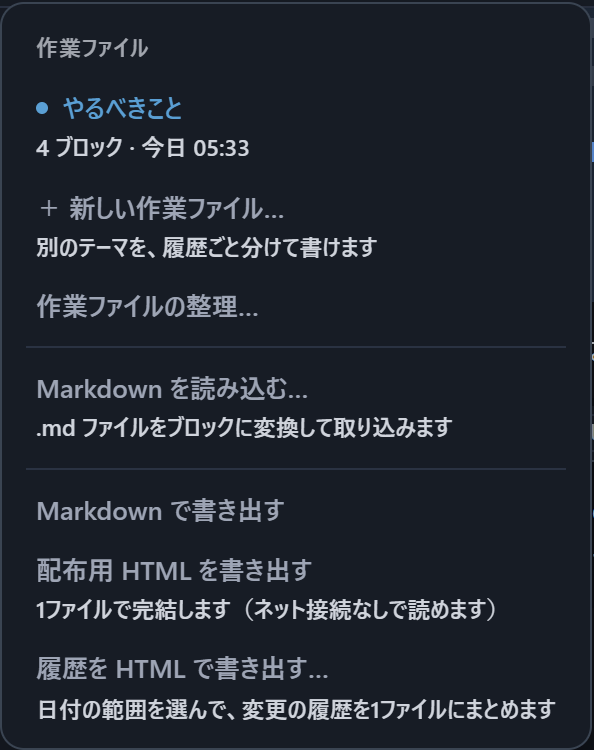
作業ファイルを切り替えると、本文だけでなく履歴も丸ごと切り替わります。 混ざりません。
分ける基準
量ではなく頭の切り替えです。仕事と趣味、制作と勉強のように、 同時に考えたくないものを分けます。
逆に、関係があるなら1つに入れたままにしてください。分けると 「本日更新」も履歴も別々になり、行き来が面倒になります。
_trash フォルダへ移すだけです。
後から取り出せます。
10人に渡す — 配布用 HTML
ツールバー右の「共有」、またはファイルメニューの「配布用 HTML を書き出す」を押すと、 HTML が1ファイルだけ出てきます。
- 相手はそれを開くだけで読めます。何も入れる必要はありません。
- インターネットに接続していなくても開けます。
- どこかへ送信されることもありません。
- 読む専用なので、渡した相手が書き換えることはできません。
Markdown で書き出すこともできます（ファイルメニュー →「Markdown で書き出す」）。
逆に、よそで書いた .md を読み込むこともできます。
11見た目の設定
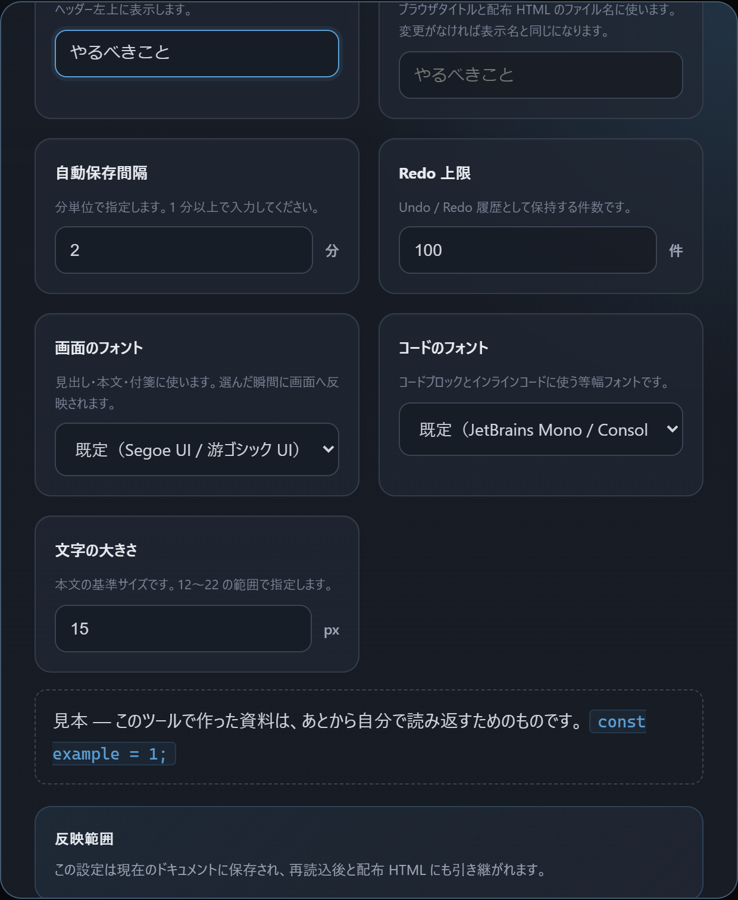
「閉じる」を押すと、保存せずに元に戻ります。気に入ったら「保存する」を押してください。
画面右下のボタンで、明るい配色と暗い配色を切り替えられます。
12キー操作
| Ctrl+F | このページの中を探す（畳んである中も探します） |
| Ctrl+Z | 元に戻す |
| Ctrl+Y | やり直す |
| Ctrl+B | 太字 |
| Ctrl+E | インラインコード（こういう字） |
| Tab / Shift+Tab | 一段下げる / 戻す |
| 行頭で Backspace | 下げた段を戻す |
ここに無い操作は、ボタンにマウスを乗せると説明が出ます。